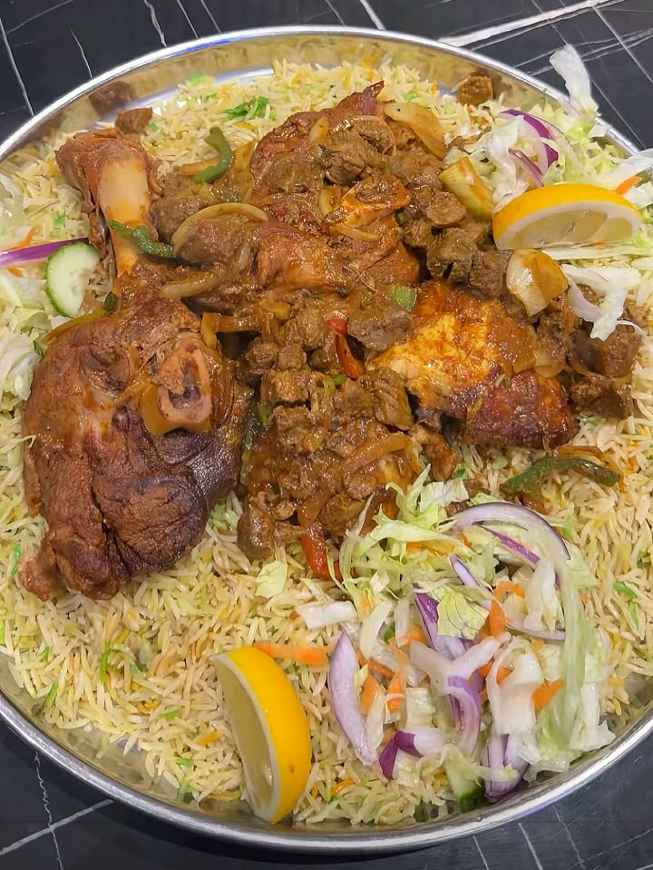

PILAU

Description
Swahili pilau is a fragrant, spiced rice dish that's a staple at celebrations and Friday lunches along the Kenyan and Tanzanian coast.
The rice is cooked in a richly spiced broth, usually made with beef or goat, giving every grain a deep brown color and a warm, peppery aroma from a signature blend of whole spices.
Unlike plain rice dishes, pilau gets its character from toasting the spices first in hot oil, which unlocks their oils before the meat and rice go in — this step is what separates a good pilau from a forgettable one.
It's typically served with kachumbari (a fresh tomato and onion salad) to cut through the richness, and pairs naturally with mahindi choma or a cold glass of tangawizi.
Ingredients
- 500g beef or goat meat, cut into chunks
- 3 cups basmati rice, washed and soaked for 20 minutes
- 2 large onions, thinly sliced
- 3 cloves garlic, minced
- 1-inch piece ginger, grated
- 3 medium tomatoes, chopped
- 4 cups beef or chicken stock
- 1/4 cup cooking oil or ghee
- 2 cinnamon sticks
- 6 cloves
- 6 cardamom pods
- 1 teaspoon cumin seeds
- 1 teaspoon black peppercorns
- 2 bay leaves
- 2 teaspoons pilau masala (store-bought or homemade blend)
- Salt, to taste
- Fresh coriander, for garnish
Steps
- Heat the oil or ghee in a large heavy-bottomed pot over medium heat.
- Add the cinnamon sticks, cloves, cardamom pods, cumin seeds, peppercorns, and bay leaves. Fry for 1–2 minutes until fragrant.
- Add the sliced onions and cook, stirring often, until golden brown — this builds the base flavor, so don't rush it.
- Stir in the garlic and ginger, cooking for another minute.
- Add the meat and brown it on all sides.
- Stir in the chopped tomatoes and pilau masala, cooking until the tomatoes break down into a thick base.
- Pour in the stock and bring to a boil. Reduce heat, cover, and simmer until the meat is tender (about 30–40 minutes).
- Drain the soaked rice and add it to the pot, stirring gently to combine with the meat and broth.
- Add salt to taste, cover tightly, and cook on low heat until the rice is fully cooked and the liquid is absorbed (about 20 minutes).
- Let it rest for 5 minutes off the heat, then fluff with a fork.
- Garnish with fresh coriander and serve hot with kachumbari.
Home